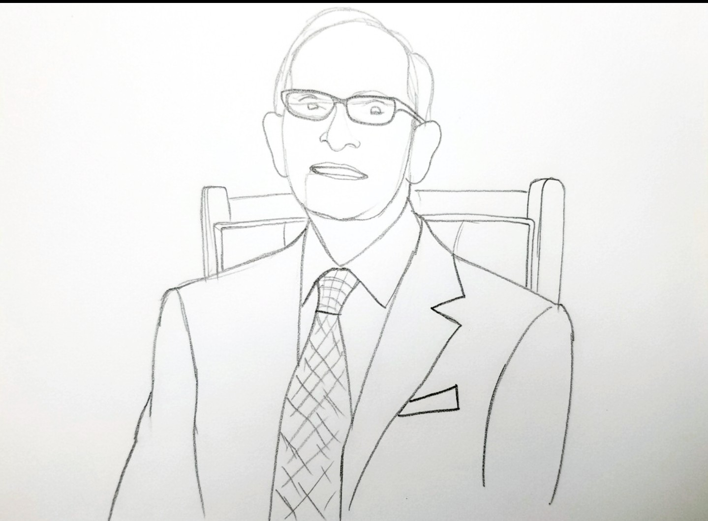

Dr. John Stafford Geddes
Newspaper Archives & Historical Records
Please Select an Article
Belfast Telegraph Brain Drain
People of the Century
Scientific American
World Congress of Cardiology Bulletin
Ulster TV Times
← Return to Homepage